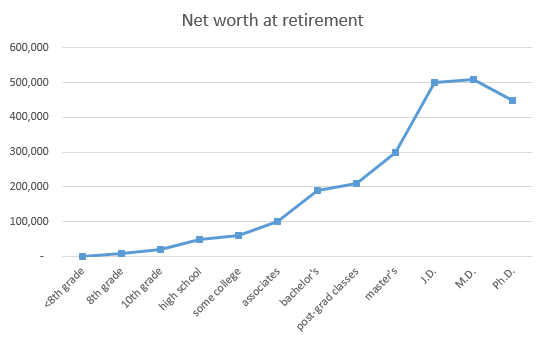
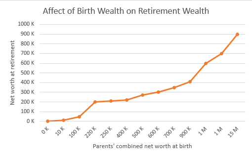

Work hard and become wealhty?
Maybe so, but work along might not cut it. The following graphs show various paths to prosperity
More advanced schooling helps. If you can avoid the crushing debt of student loans, all the better. Try to find a major that you're good at and that is good to you.
For accruing wealth, what's even better than education? Being born wealthy. In the graph below, note how the birthright high enders are able to become more wealthy than the education high enders. So before being born, shop around.
Although the graphs' data is fabricated the trends are real. See Lisa Keister's "Getting Rich: America's New Rich and How They Got That Way" and Pew Charitable Trusts' "Economic Mobility Project."